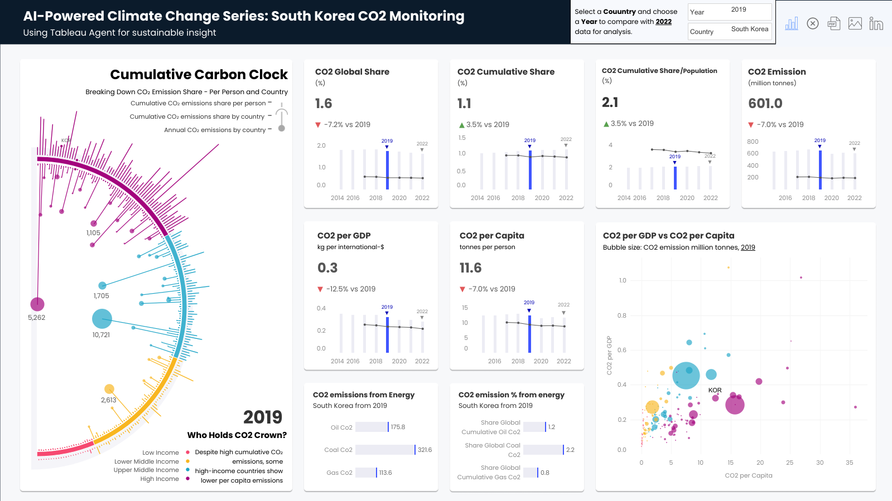
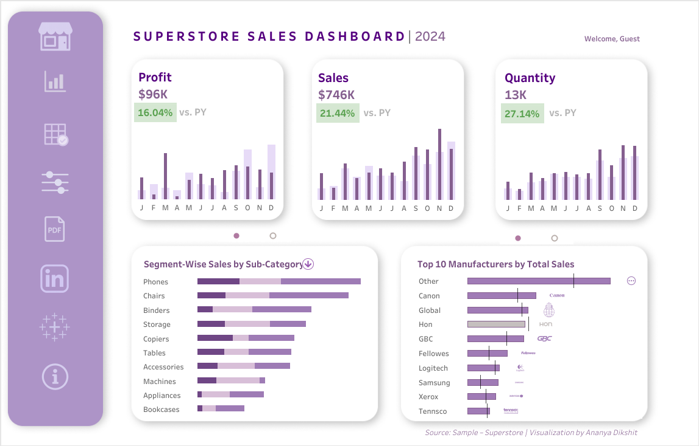
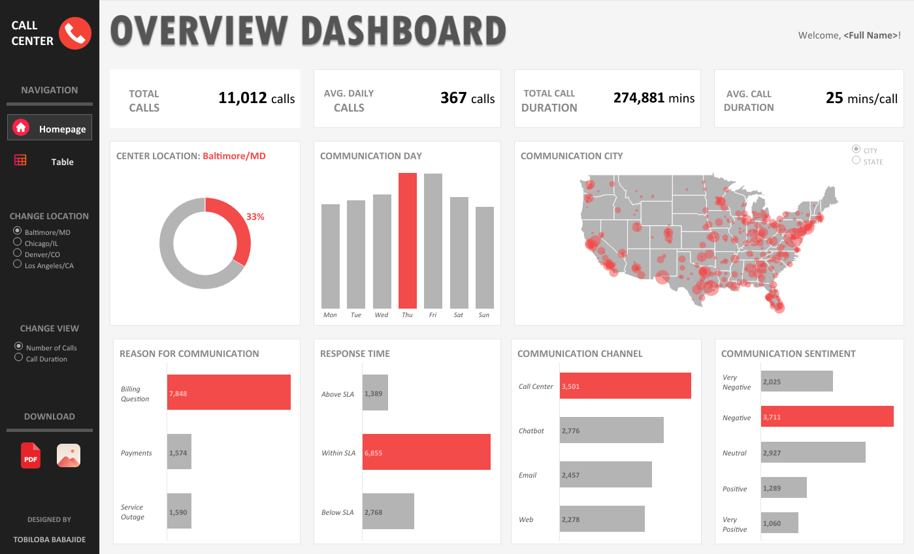

dashboard-101:
Principles and Best Practices of Dashboard Development in the Industry
PhD Candidate in Public Health,
Infectious & Tropical Diseases Epidemiology Lab, Monash University Indonesia
Sun, 10 May 2026
Agenda
🎯 About Dashboards
📐 Design Thinking & Key Principles
🎨 Best Practices
🛠️ Dashboard Development Environment
🌐 Hands On: SEAWeather
Which Dashboard Helps You Make Decisions Faster?


How This Dashboard Helps Users:
- Key headline (e.g. North Korea): CO₂ per capita 11.6t, down from 2019; CO₂ per GDP 0.3t, also slightly down.
- Driving factor: The “Emissions from Energy” chart shows coal with the largest share
- Action: Shift energy sources to cleaner alternatives, such as solar or wind
- Key metric: Sales $746K and Profit $96K, both up year-over-year
- Deeper detail: The “Sub-Category” chart shows Chairs and Phones with the largest growth
- Action: Reorder top-selling products, run promotions on Bookcases whose sales are declining
Why Do Dashboards Matter?
“Dashboards sit between questions and decisions. When working well, the team asks ‘What patterns/trends are visible?’, and within seconds can perform analysis or make decisions. When it doesn’t work, the team tends to search and guess”
Data → Decision: without a dashboard, how long does it take?
collect → clean → model → transform → encode (visualise)
This pipeline is the core of every data product — the dashboard sits at the end (“encode”).
What Is a Dashboard?
Dashboard = Communication Tool, Not Just a Data Display
Three main functions:
- 📢Deliver the message: one shared perspective
- ❓Answer key questions: frequently asked, answered automatically
- ⚡Support decision-making: from “What changed?” directly to action
Daily Car Dashboard Example
Do you need to know how many liters of fuel have been used?
You only need to know: is there enough to reach the destination or not? Not every number — the right number, at the right time.
“There is a story in your data. But your tools don’t know what that story is.”
Cole Nussbaumer Knaflic, Storytelling with Data (2015)
Dashboard vs Report vs Apps
| Dimension | 📊 Dashboard | 📄 Report | 📱 Apps |
|---|---|---|---|
| Update | Real-time / Automatic | Periodic / Manual | Real-time |
| Interactivity | Medium | Low | High |
| Purpose | Monitor & Decisions | Documentation | Transaction / Action |
| Example | Google Analytics | Annual Report | Tokopedia |
Why Use a Dashboard?
“A visual display of the most important information needed to achieve one or more objectives; consolidated and arranged on a single screen so the information can be monitored at a glance.”
Stephen Few, Information Dashboard Design (2013, 2nd ed.)
Three Types of Dashboards
Important
There is no universal dashboard. The wrong type = accurate data but the dashboard doesn’t fit the need. Always start with: Who is the user? What question needs to be answered? How often should it update?
Classification adapted from Few’s typology (2013) and widely used in the Business Intelligence (BI) industry.
Strategic Dashboard

Operational Dashboard

Analytical Dashboard

Design Thinking & Key Principles
Key Principle: Start from the User, Not the Data
→ Dashboard overloaded, nothing readable.
→ User confused, hard to make decisions.
→ Dashboard focused on what's relevant only.
→ User understands, decisions made quickly.
A good dashboard is not the one that displays all available data, but the one that answers the most frequently asked questions in the fastest way possible to understand.
Implications:
- Before coding, interview users first
- Before choosing a chart, define the question
- Before styling, make sure the functionality is correct first
Design Thinking: 5 Stages of Building a Dashboard
Interview & observe.
"What decisions do you make most often?"
Focus on the decision to be made.
"One most important question."
Freely, without constraints first.
Sketch on paper, don't code yet.
Focus on function, not perfect appearance.
Done is better than perfect.
Iterate based on feedback.
The best dashboard = the one revised most often.
Note
Design Thinking is not a linear process — Empathize and Test can occur repeatedly before the dashboard is deemed fit for purpose.
Effective Dashboards: From Insight to Action
Key Principles: Checklist for an Actionable Dashboard
Test: "If this element were removed, would the user lose important information?"
If not, remove it!
Test: Show it to someone who has never seen the dashboard. What is their first reaction?
Test: "If this number goes up/down, what will the user do?"
If unknown, it means the question is not yet defined.
Tufte (1983), Few (2013) , Knaflic (2015)
Best Practices for Building Effective Dashboards
Effective Dashboards Tell a Story
Dashboard story arc:
- Setup (KPI): CO₂ per capita 5.2t, down vs 2019
- Conflict (Driver): Oil = largest contributor
- Resolution (Action): Shift to renewables, quarterly targets
“What changed? → Why? → What should we do now?”
A narrative approach should be used in every dashboard development.
Visual Hierarchy: The Z-Pattern
START — Primary KPIs
Secondary KPIs
Trends / Charts
Details / Tables
Color Principles: Signal, Not Decoration
✅ Use color specifically for:
- Brand neutral → background, border, label
- One highlight feature → “pay attention here!” (consistent)
- Alert/risk → red/orange, and only that
❌ Avoid:
- 8+ different colors just to look “interesting”
- Rainbow chart (pie chart with 12 slices)
- Colors without consistent meaning
Accessibility
8% of men experience color blindness. Always add icons or labels as a secondary differentiator. Use ColorBrewer for accessible palettes.
Choose the Right Chart
| Question | ✅ Right Chart | ❌ Often Wrong |
|---|---|---|
| Comparison between categories | Bar chart | Pie chart |
| Trend over time | Line chart | Stacked bar |
| Overall proportion | Stacked bar / Treemap | Pie > 5 slices |
| Data distribution | Histogram / Box plot | Regular bar |
| Relationship between two variables | Scatter plot | Line chart |
| Geographic data | Choropleth / Dot map | Region name table |
| A single key number | KPI card / Gauge | Any chart |
Note
About Pie Charts: Humans generally struggle to compare area sizes. More than 3–4 slices → use a bar chart. Always.
Hall of Shame: 5 Most Common Mistakes
- “Dashboard as a report” — too many numbers, no hierarchy, everything feels equally important
- “Chartjunk” — gradients, 3D shadows, clipart, background images overwhelm the data
- “Rainbow syndrome” — many colors without consistent meaning
- “Missing context” — a number “1,247” without units, no comparison, no trend
- “Precision theater” — 6 decimal places when the decision only needs a whole number
Dashboard Development Environment
IDE (Integrated Development Environment): BI Tools vs Code-First
🖱️ BI Tools (No-Code/Low-Code)
- Tableau: comprehensive visualization, expensive
- Power BI: Microsoft ecosystem, enterprise
- Metabase: open source, self-host
- Google Looker Studio: Google ecosystem, free
Best for: business analysts, non-technical teams, standard dashboards
💻 Code-First (Python/R)
- Streamlit: easiest, Python
- Dash (Plotly): flexible, production-grade
- Shiny R/Python ← used in the hands-on!
- Observable: JS, web-native
- Quarto ← used to build these slides!
Best for: data scientists, custom logic, ML integration
Choosing an IDE
Choose based on your audience, complexity, and maintainability.
Hands On: Building a Python Shiny Dashboard
“Hi, I’m a student looking for data on XYZ… many thanks in advance 🙏🏻”
2,000+
Free, open APIs, available today curated by the global developer community
API Categories
WHO, OpenFDA, Disease.sh
COVID data, vaccination, disease
Weatherstack, Open-Meteo
Real-time weather, forecast
AirVisual, NASA EONET
AQI, disasters, deforestation
Alpha Vantage, CoinGecko
Stocks, forex, crypto
BPS API, World Bank
Demographics, economy
NASA, OpenAQ
Asteroids, atmosphere, climate
How to Use an API: Just 3 Steps
# Step 1: Register → Get API key (email + 30 seconds)
API_KEY = "your_key_here" # store in .env, don't hardcode!
# Step 2: Read the docs → understand the endpoint
# Example Weatherstack: GET http://api.weatherstack.com/current
# Step 3: Fetch data
import requests
response = requests.get(
"http://api.weatherstack.com/current",
params={"access_key": API_KEY, "query": "Jakarta"}
)
data = response.json()
print(data["current"]["temperature"]) # → 32
print(data["current"]["air_quality"]["pm2_5"]) # → 81.45 🎉
print(data["current"]["astro"]["sunrise"]) # → 06:01 AM 🎉Weatherstack Free Plan
One API call gives you: standard weather + air quality (6 pollutants) + astronomy (sunrise/sunset/moon phase)
From API to Dashboard
# You already have this → JSON data from the API
# All that remains is:
from shiny import App, ui, render
import plotly.express as px
app_ui = ui.page_fluid(
ui.h2("🌦️ SEAWeather"),
ui.output_ui("weather_card"),
ui.output_plot("aqi_chart")
)
def server(input, output, session):
@render.ui
def weather_card():
# data already available from API call
return ui.card(f"Jakarta: {data['temp']}°C")Note
The question is no longer: “Where does the data come from?”
But rather: “What story do you want to tell with this data?”
And that is where the essence of an effective dashboard can be built.